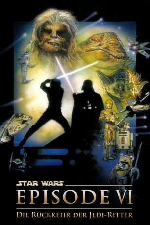

Auszeichnungen: 1 Oscars gewonnen für 4 Oscars nominiert 1 BAFTA-Awards gewonnen
 gesehen am 29.03.2016
gesehen am 29.03.2016Alternativ: Star Wars: Episode VI - Return of the Jedi
Auszeichnungen: 1 Oscars gewonnen für 4 Oscars nominiert 1 BAFTA-Awards gewonnen gesehen am 29.03.2016
 
 IMDB-Wertung: 8.3 / 10
IMDB-Wertung: 8.3 / 10  IMDB-TOP-Platzierung: 80
IMDB-TOP-Platzierung: 80  Metascore:
Metascore: 
Wesen aus allen Ecken der Galaxis treffen die Vorbereitungen für die entscheidende Schlacht gegen die Streitkräfte des Imperiums. Ziel der Aktion ist die totale Zerstörung des zweiten Todessterns, dessen unvorstellbare Feuerkraft ganze Planeten vernichten kann. Inzwischen ist Han Solo immer noch in der Wüstenfestung des mächtigsten und skrupellosesten Verbechers des Universums, Jabba the Hutt, gefangen. Luke Skywalker gelingt es schließlich zusammen mit seinen Gefährten Prinzessin Leia, Chewbacca und Lando Calrissian, sowie den beiden Robotern C3PO und R2D2 mit Han zu fliehen. Aber Luke steht die schwerste Prüfung noch bevor: Während auf dem Waldmond Endor und beim Todesstern die alles entscheidende Schlacht entbrennt, muß er sich seinem Erzfeind Darth Vader zu einem Zweikampf auf Leben und Tod stellen...
Jahr: 1983
Dauer: 131 Minuten
FSK: 12
Land: USA Studio: A Twentieth Century-Fox releaseTonspuren:
Untertitel: Deutsch, Englisch,
Auflösung: 1080p (1920x1080) Größe: 33996 MB
Genre: Action, Abenteuer, Fantasy, Sci-Fi
Regisseur: Richard Marquand
Drehbuch: Lawrence Kasdan, George Lucas, George Lucas
Soundtrack: John Williams
Darsteller:
 Mark Hamill als Luke Skywalker
Mark Hamill als Luke Skywalker Harrison Ford als Han Solo
Harrison Ford als Han Solo Billy Dee Williams als Lando Calrissian
Billy Dee Williams als Lando Calrissian Frank Oz als Yoda
Frank Oz als Yoda James Earl Jones als Darth Vader
James Earl Jones als Darth Vader David Prowse als Darth Vader
David Prowse als Darth Vader Alec Guinness als Ben 'Obi-Wan' Kenobi
Alec Guinness als Ben 'Obi-Wan' Kenobi Dermot Crowley als General Madine
Dermot Crowley als General Madine Debbie Lee Carrington als Ewok
Debbie Lee Carrington als Ewok Felix Silla als Ewok
Felix Silla als Ewok Erik Bauersfeld als Bib Fortuna / Admiral Ackbar , uncredited
Erik Bauersfeld als Bib Fortuna / Admiral Ackbar , uncredited Deep Roy als Droopy McCool , uncredited
Deep Roy als Droopy McCool , uncredited Tina Simmons als Rebel Technician , uncredited
Tina Simmons als Rebel Technician , uncredited Claire Davenport als Fat Dancer
Claire Davenport als Fat DancerDatei: X:\7+mehr(A-Z)\Star Wars\Star Wars Episode 6 - Die Rückkehr der Jedi-Ritter (1983, FSK12, 1920x1080).mkv seit 21.02.2015
Festplatte: HD Collection-7+mehr(A-Z)+Person
 Es gibt insgesamt 18 Filme in der Gruppe '7+mehr(A-Z)\Star Wars'
Es gibt insgesamt 18 Filme in der Gruppe '7+mehr(A-Z)\Star Wars'